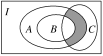
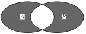

福安一中高二理科数学暑假作业1
班级： 座号： 姓名：
日期：7 月 10 日
一、选择题
1．已知集合A＝{1,2,3,4}，B＝x，x∈A，则A∩B＝( )
A．{1,2,3,4} B．{1,2} C{1,3} D．{2,4}
2．如图，I是全集，A、B、C是它的子集，则阴影部分所表示的集合是( )
A．(∁IA∩B)∩C B．(∁IB∪A)∩C
C．(A∩B)∩∁IC D．(A∩∁IB)∩C
3．(2010·北京宣武模拟)设集合A＝{1,2,3,4}，B＝{3,4,5}，全集U＝A∪B，则集合∁U(A∩B)的元素个数为( )
A．1个 B．2个 C．3个 D．4个
4．设集合U＝{小于7的正整数}，A＝{1,2,5}，B＝＋1≤0，x∈N，则A∩(∁UB)＝( )
A．{1} B．{2} C．{1,2} D．{1,2,5}
5．设集合A＝{x|y＝x2－4}，B＝{y|y＝x2－4}，C＝{(x，y)|y＝x2－4}，则下列关系：①A∩C＝∅；②A＝C；③A＝B；④B＝C.其中不正确的共有( )
A．1个 B．2个 C．3个 D．4个
6．如图所示的韦恩图中，A、B是非空集合，定义A*B表示阴影部分的集合．若x，y∈R，A＝{x|y＝}，B＝{y|y＝3x，x＞0}，则A*B为( )

A．{x|0＜x＜2} B．{x|1＜x≤2}
C．{x|0≤x≤1或x≥2} D．{x|0≤x≤1或x＞2}
二、填空题
7．设集合A＝{x|x2－2x＋2m＋4＝0}，B＝{x|x<0}，若A∩B≠∅，则实数m的取值范围为____________．
8．设全集U＝A∪B＝{x∈N*|lgx＜1}，若A∩(∁UB)＝{m|m＝2n＋1，n＝0,1,2,3,4}，则集合B＝________.
9．某班共30人，其中15人喜爱篮球运动，10人喜爱乒乓球运动，8人对这两项运动都不喜爱，则喜爱篮球运动但不喜爱乒乓球运动的人数为________．
三、解答题
10．设函数f(x)＝x3＋ax2－9x－1(a<0)．若曲线y＝f(x)的斜率最小的切线与直线12x＋y＝6平行，求：
(1)a的值；
(2)函数f(x)的单调区间．
福安一中高二理科数学暑假作业1答案
1．B2．D3．C4． C5． C6． D
二、填空题
7． 答案：{m|m<－2} 8答案：{2,4,6,8} 9．答案：12
三、解答题
10．解：(1)因f(x)＝x3＋ax2－9x－1，
所以f′(x)＝3x2＋2ax－9
＝332－9－3.
即当x＝－3时，f′(x)取得最小值－9－3.
因斜率最小的切线与12x＋y＝6平行，即该切线的斜率为－12，所以－9－3＝－12，即a2＝9.
解得a＝±3，由题设a<0，所以a＝－3.
(2)由(1)知a＝－3，因此f(x)＝x3－3x2－9x－1，
f′(x)＝3x2－6x－9＝3(x－3)(x＋1)，
令f′(x)＝0，解得x1＝－1，x2＝3.
当x∈(－∞，－1)时，f′(x)>0，
故f(x)在(－∞，－1)上为增函数；
当x∈(－1,3)时，f′(x)<0，
故f(x)在(－1,3)上为减函数；
当x∈(3，＋∞)时，f′(x)>0，故f(x)在(3，＋∞)上为增函数．
由此可见，函数f(x)的单调递增区间为(－∞，－1)和(3，＋∞)，单调递减区间为(－1,3)．